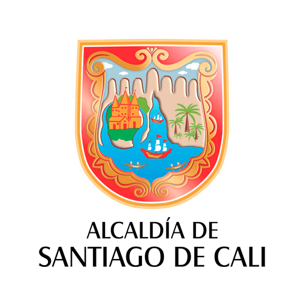

Distrito de Aguablanca · Cali

Pulmón del
Oriente
Informe Analítico de Inversión Pública
// FUENTE: SECRETARÍAS DISTRITALES · CÁLCULO DINÁMICO
...
Frentes de Obra
...
Inversión COP
Modo de Análisis:
Frentes de Obra (UPS)
Todos los Contratos
Filtrar por Año:
Todos los años
2024
2025
2026
2027
Geofiltro activo: Polígono Magenta
Procesando información geoespacial y aplicando filtros...
01 —
Estado General
...
Total Frentes
...
En Alistamiento
...
En Ejecución
...
Terminados
...
Suspendidos
Inversión por Secretaría
Estado Físico
02 —
Categorías
Inversión por Tipo
Inversión por Año
03 —
Territorio
Top Barrios (Presupuesto)
Conteo por Barrio
04 —
Destacados en Ejecución
Secretaría
Tipo
Nombre
Barrio
Año
Presupuesto
Avance
Informe
Mapa